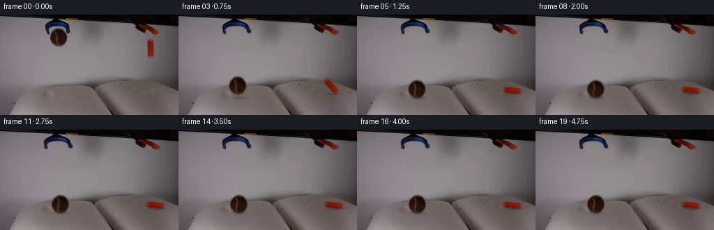
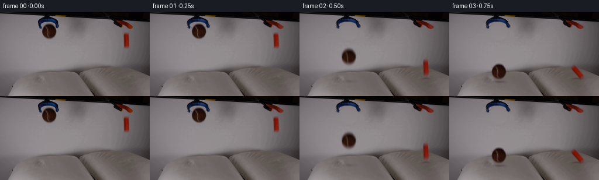

候选 01 · 2026-11-08T18:29:50.222384+00:00 · 点开播放与检查图
inspection.png

transition_check.png

代码变化
--- 上一保存版本
+++ 本次保存版本
@@ -0,0 +1,229 @@
+from pathlib import Path
+import math
+import numpy as np
+from PIL import Image
+import cv2
+from scipy.ndimage import gaussian_filter, distance_transform_edt
+import artifact_io
+
+ROOT=Path(__file__).resolve().parent
+SOURCE=np.asarray(Image.open(ROOT/'first_frame.png').convert('RGB'))
+H,W=SOURCE.shape[:2]
+Y,X=np.mgrid[:H,:W].astype(np.float32)
+SRC=SOURCE.astype(np.float32)
+
+
+def polynomial_background(region, excluded, degree=3):
+ x0,y0,x1,y1=region
+ domain=(X>=x0)&(X<x1)&(Y>=y0)&(Y<y1)
+ good=domain&(~excluded)
+ xx=(X-(x0+x1)/2)/max(x1-x0,1)
+ yy=(Y-(y0+y1)/2)/max(y1-y0,1)
+ terms=np.stack([xx**i*yy**j for i in range(degree+1) for j in range(degree+1-i)],axis=-1)
+ co=np.linalg.lstsq(terms[good],SRC[good],rcond=None)[0]
+ return terms@co
+
+# Separate the photographed subjects from the quiet, softly shaded backdrop.
+ball_area=(((X-84.1)/15.0)**2+((Y-32.7)/15.6)**2<1)&(Y>=18)
+blue=(SRC[:,:,2]-SRC[:,:,0]>7)
+ball_area &= ~blue
+ball_ex=((X>62)&(X<104)&(Y<49))
+bgball=polynomial_background((53,15,116,64),ball_ex)
+block_area=(X>=209)&(X<=223)&(Y>=32)&(Y<=65)
+bgblock=polynomial_background((195,29,237,78),block_area)
+
+plate=SRC.copy()
+# Replace only the source footprints; preserve every other part of the shot.
+plate[ball_area]=bgball[ball_area]
+plate[block_area]=bgblock[block_area]
+
+# The recorded soft edges become alpha rather than carrying a gray rectangle.
+g_ball=13+0.29*np.clip(Y-25,0,20)
+ball_alpha=np.clip((bgball[:,:,1]-SRC[:,:,1])/(bgball[:,:,1]-g_ball+1e-6),0,1)
+ball_alpha*=ball_area
+ball_core=((X-84.2)/10.45)**2+((Y-32.5)/10.7)**2<1
+ball_alpha[ball_core]=1
+ball_alpha[ball_alpha<0.018]=0
+block_g=20+np.clip(Y-43,0,14)*0.65
+block_alpha=np.clip((bgblock[:,:,1]-SRC[:,:,1])/(bgblock[:,:,1]-block_g+1e-6),0,1)*block_area
+block_alpha[(X>=213)&(X<=219)&(Y>=39)&(Y<=56)]=1
+block_alpha[block_alpha<0.035]=0
+
+def rgba_from_matte(bg,a):
+ rgb=np.clip((SRC-bg*(1-a[:,:,None]))/np.maximum(a[:,:,None],1e-5),0,255)
+ return rgb*a[:,:,None],a
+ball_rgb,ball_a=rgba_from_matte(bgball,ball_alpha)
+block_rgb,block_a=rgba_from_matte(bgblock,block_alpha)
+
+# Small outward articulation of the blue gripper, anchored to its original stem.
+# Only its colored/dark silhouette is moved, not the table behind it.
+head_region=(X>=61)&(X<=103)&(Y>=7)&(Y<=30)&(~ball_area)
+head_ex=(X>=60)&(X<=104)&(Y<50)
+bghead=polynomial_background((48,11,118,60),head_ex)
+head_alpha=np.clip((bghead[:,:,1]-plate[:,:,1])/(bghead[:,:,1]-25),0,1)*head_region
+# The interior background remains transparent.
+head_alpha[(plate[:,:,2]-plate[:,:,0]<4)&(plate[:,:,1]>60)]=0
+head_alpha[head_alpha<0.07]=0
+head_rgb=np.clip((plate-bghead*(1-head_alpha[:,:,None]))/np.maximum(head_alpha[:,:,None],1e-5),0,255)*head_alpha[:,:,None]
+
+# At the right, the two rubber jaws are already separated in the source exposure.
+# A two-pixel extra opening at their lower ends completes the release.
+rhead_region=(X>=197)&(X<=229)&(Y>=14)&(Y<=30)
+rbg=polynomial_background((184,18,243,70),((X>=192)&(X<=232)&(Y<33))|block_area)
+rhead_a=np.clip((rbg[:,:,1]-plate[:,:,1])/(rbg[:,:,1]-12),0,1)*rhead_region
+rhead_a[rhead_a<.055]=0
+rhead_rgb=np.clip((plate-rbg*(1-rhead_a[:,:,None]))/np.maximum(rhead_a[:,:,None],1e-5),0,255)*rhead_a[:,:,None]
+
+
+def affine_layer(rgb,a,cx,cy,nx,ny,angle=0,sx=1,sy=1):
+ rad=np.deg2rad(angle)
+ co,si=np.cos(rad),np.sin(rad)
+ m=np.array([[co*sx,-si*sy,0],[si*sx,co*sy,0]],np.float32)
+ m[:,2]=[nx,ny]-m[:,:2]@np.array([cx,cy])
+ color=cv2.warpAffine(rgb,m,(W,H),flags=cv2.INTER_LINEAR,borderMode=cv2.BORDER_CONSTANT)
+ alpha=cv2.warpAffine(a,m,(W,H),flags=cv2.INTER_LINEAR,borderMode=cv2.BORDER_CONSTANT)
+ return color,alpha
+
+
+def overlay(im,rgb,a):
+ return im*(1-a[:,:,None])+rgb
+
+
+def smoothstep(t):
+ t=np.clip(t,0,1)
+ return t*t*(3-2*t)
+
+RELEASE=.255
+G=1450.0
+BALL_GROUND=117.7
+BLOCK_GROUND=112.4
+BALL_CY=32.6
+BALL_R=11.8
+BALL_CONTACT=math.sqrt(2*(BALL_GROUND-BALL_R-BALL_CY)/G)
+BLOCK_CONTACT=(-13+math.sqrt(13**2+2*G*(BLOCK_GROUND-10.5-47.4)))/G
+
+
+def state(t):
+ u=max(0,t-RELEASE)
+ # All free-flight trajectories use the same downward acceleration.
+ if u<BALL_CONTACT:
+ by=BALL_CY+.5*G*u*u
+ bx=84.1+.65*u
+ ang=5*u
+ dent=0.
+ else:
+ q=u-BALL_CONTACT
+ # Pillow deformation and a low-restitution first rebound.
+ contact_y=BALL_GROUND-BALL_R
+ if q<.055:
+ by=contact_y+2.3*np.sin(q/.055*np.pi/2)
+ elif q<.25:
+ v=(q-.055)/.195
+ by=contact_y+2.3*(1-v)-5.5*np.sin(np.pi*v)
+ else:
+ z=q-.25
+ by=contact_y+1.15+0.7*np.exp(-z*8)*np.sin(22*z)
+ bx=84.1+2.3*(1-np.exp(-q*2.2))
+ ang=2+11*(1-np.exp(-q*2.2))
+ dent=1.15+2.4*np.exp(-q*9)*(1+.25*np.sin(27*q))
+ if u<BLOCK_CONTACT:
+ oy=47.4+13*u+.5*G*u*u
+ ox=215.9+.25*u
+ oa=-1.8*u
+ od=0.
+ else:
+ q=u-BLOCK_CONTACT
+ # The slender block tips about its lower edge, then lies on the cushion.
+ f=smoothstep(q/.48)
+ oa=-83*f
+ if q>.48:
+ oa += 2.2*np.exp(-(q-.48)*8)*np.sin((q-.48)*19)
+ half_height=abs(11*np.cos(np.deg2rad(oa)))+abs(4.1*np.sin(np.deg2rad(oa)))
+ oy=BLOCK_GROUND+0.65-half_height
+ oy+=.65*np.exp(-q*9)*np.sin(q*28)
+ ox=215.9+6.0*f
+ od=.65+1.15*np.exp(-q*8)
+ return bx,by,ang,dent,ox,oy,oa,od
+
+
+def open_grabbers(im,t):
+ f=smoothstep((t-.12)/.23)
+ if f<=0: return im
+ # Deform only lower jaws, leaving both shafts fixed.
+ opening=1+.30*f*np.clip((Y-10)/18,0,1)
+ mx=(82+(X-82)/opening).astype(np.float32)
+ my=(Y+.7*f*np.clip((Y-12)/18,0,1)).astype(np.float32)
+ a=cv2.remap(head_alpha,mx,my,cv2.INTER_LINEAR)
+ c=cv2.remap(head_rgb,mx,my,cv2.INTER_LINEAR)
+ # Restore background wherever the original head covered it.
+ removal=(head_alpha>.01)
+ clean=im.copy()
+ clean[removal]=bghead[removal]
+ im=overlay(clean,c,a)
+ opening=1+.25*f*np.clip((Y-16)/13,0,1)
+ center=201+.98*(Y-14)
+ mx=(center+(X-center)/opening).astype(np.float32)
+ my=Y.astype(np.float32)
+ a=cv2.remap(rhead_a,mx,my,cv2.INTER_LINEAR)
+ c=cv2.remap(rhead_rgb,mx,my,cv2.INTER_LINEAR)
+ clean=im.copy()
+ clean[rhead_a>.01]=rbg[rhead_a>.01]
+ return overlay(clean,c,a)
+
+
+def pillow_deform(im,bx,dent,ox,od):
+ # Local fabric displacement; the original weave and creases are retained.
+ d1=dent*np.exp(-((X-bx)/17)**2-((Y-117.8)/10)**2)
+ d2=od*np.exp(-((X-ox)/17)**2-((Y-112.5)/9)**2)
+ gate=smoothstep((Y-100)/9)
+ shift=(d1+d2)*gate
+ warped=cv2.remap(im,X,(Y-shift).astype(np.float32),cv2.INTER_LINEAR,borderMode=cv2.BORDER_REPLICATE)
+ # Gentle shading around the shallow depressions.
+ sh=1-.033*(d1+d2)*gate
+ return warped*sh[:,:,None]
+
+
+def shadow(im,cx,cy,rx,ry,strength):
+ a=strength*np.exp(-1.8*((X-cx)/rx)**2-1.8*((Y-cy)/ry)**2)
+ a*=smoothstep((Y-99)/7)
+ return im*(1-a[:,:,None])
+
+
+def render(t):
+ bx,by,ba,d,ox,oy,oa,od=state(t)
+ im=open_grabbers(plate.copy(),t)
+ im=pillow_deform(im,bx,d,ox,od)
+ bh=max(0,BALL_GROUND-(by+BALL_R))
+ oh=max(0,BLOCK_GROUND-(oy+10.5))
+ im=shadow(im,bx+1.0,118.2+.45*d,12+bh*.10,2.4+bh*.024,.24*np.exp(-bh/40))
+ im=shadow(im,ox+.5,113.0+.4*od,8+6*abs(np.sin(np.deg2rad(oa)))+oh*.05,2.0+oh*.02,.23*np.exp(-oh/32))
+ br,aa=affine_layer(ball_rgb,ball_a,84.1,32.6,bx,by,ba)
+ im=overlay(im,br,aa)
+ rr,aa=affine_layer(block_rgb,block_a,215.9,47.4,ox,oy,oa)
+ return np.clip(overlay(im,rr,aa),0,255)
+
+
+def main():
+ frames=[SOURCE.copy()]
+ for i in range(1,20):
+ t=i/4
+ # Short exposure, not slow motion; faster portions have modest motion blur.
+ if t<1.2:
+ exposure=1/65
+ frame=np.mean([render(t+s*exposure) for s in [-.5,-.25,0,.25,.5]],axis=0)
+ else:
+ frame=render(t)
+ frames.append(np.uint8(np.clip(np.round(frame),0,255)))
+ frames=np.stack(frames)
+ assert np.array_equal(frames[0],SOURCE)
+ artifact_io.save(frames,ROOT)
+ # Save analysis-only intermediate data locally, with no visual tool invocation.
+ tmp=ROOT/'.tmp'; tmp.mkdir(exist_ok=True)
+ Image.fromarray(np.uint8(np.clip(plate,0,255))).save(tmp/'clean_plate.png')
+ np.savez_compressed(tmp/'layers.npz',ball_alpha=ball_a,block_alpha=block_a)
+ print('Saved',frames.shape,frames.dtype)
+ for i in range(9):
+ print(i, np.round(state(i/4),2).tolist())
+
+if __name__=='__main__':
+ main()
命令 6 · 2026-11-08T18:29:49.157641+00:00/bin/bash -lc "cat > generate.py <<'PY'
from pathlib import Path
import math
import numpy as np
from PIL import Image
import cv2
from scipy.ndimage import gaussian_filter, distance_transform_edt
import artifact_io
ROOT=Path(__file__).resolve().parent
SOURCE=np.asarray(Image.open(ROOT/'first_frame.png').convert('RGB'))
H,W=SOURCE.shape[:2]
Y,X=np.mgrid[:H,:W].astype(np.float32)
SRC=SOURCE.astype(np.float32)
def polynomial_background(region, excluded, degree=3):
x0,y0,x1,y1=region
domain=(X>=x0)&(X<x1)&(Y>=y0)&(Y<y1)
good=domain&(~excluded)
xx=(X-(x0+x1)/2)/max(x1-x0,1)
yy=(Y-(y0+y1)/2)/max(y1-y0,1)
terms=np.stack([xx**i*yy**j for i in range(degree+1) for j in range(degree+1-i)],axis=-1)
co=np.linalg.lstsq(terms[good],SRC[good],rcond=None)[0]
return terms@co
# Separate the photographed subjects from the quiet, softly shaded backdrop.
ball_area=(((X-84.1)/15.0)**2+((Y-32.7)/15.6)**2<1)&(Y>=18)
blue=(SRC[:,:,2]-SRC[:,:,0]>7)
ball_area &= ~blue
ball_ex=((X>62)&(X<104)&(Y<49))
bgball=polynomial_background((53,15,116,64),ball_ex)
block_area=(X>=209)&(X<=223)&(Y>=32)&(Y<=65)
bgblock=polynomial_background((195,29,237,78),block_area)
plate=SRC.copy()
# Replace only the source footprints; preserve every other part of the shot.
plate[ball_area]=bgball[ball_area]
plate[block_area]=bgblock[block_area]
# The recorded soft edges become alpha rather than carrying a gray rectangle.
g_ball=13+0.29*np.clip(Y-25,0,20)
ball_alpha=np.clip((bgball[:,:,1]-SRC[:,:,1])/(bgball[:,:,1]-g_ball+1e-6),0,1)
ball_alpha*=ball_area
ball_core=((X-84.2)/10.45)**2+((Y-32.5)/10.7)**2<1
ball_alpha[ball_core]=1
ball_alpha[ball_alpha<0.018]=0
block_g=20+np.clip(Y-43,0,14)*0.65
block_alpha=np.clip((bgblock[:,:,1]-SRC[:,:,1])/(bgblock[:,:,1]-block_g+1e-6),0,1)*block_area
block_alpha[(X>=213)&(X<=219)&(Y>=39)&(Y<=56)]=1
block_alpha[block_alpha<0.035]=0
def rgba_from_matte(bg,a):
rgb=np.clip((SRC-bg*(1-a[:,:,None]))/np.maximum(a[:,:,None],1e-5),0,255)
return rgb*a[:,:,None],a
ball_rgb,ball_a=rgba_from_matte(bgball,ball_alpha)
block_rgb,block_a=rgba_from_matte(bgblock,block_alpha)
# Small outward articulation of the blue gripper, anchored to its original stem.
# Only its colored/dark silhouette is moved, not the table behind it.
head_region=(X>=61)&(X<=103)&(Y>=7)&(Y<=30)&(~ball_area)
head_ex=(X>=60)&(X<=104)&(Y<50)
bghead=polynomial_background((48,11,118,60),head_ex)
head_alpha=np.clip((bghead[:,:,1]-plate[:,:,1])/(bghead[:,:,1]-25),0,1)*head_region
# The interior background remains transparent.
head_alpha[(plate[:,:,2]-plate[:,:,0]<4)&(plate[:,:,1]>60)]=0
head_alpha[head_alpha<0.07]=0
head_rgb=np.clip((plate-bghead*(1-head_alpha[:,:,None]))/np.maximum(head_alpha[:,:,None],1e-5),0,255)*head_alpha[:,:,None]
# At the right, the two rubber jaws are already separated in the source exposure.
# A two-pixel extra opening at their lower ends completes the release.
rhead_region=(X>=197)&(X<=229)&(Y>=14)&(Y<=30)
rbg=polynomial_background((184,18,243,70),((X>=192)&(X<=232)&(Y<33))|block_area)
rhead_a=np.clip((rbg[:,:,1]-plate[:,:,1])/(rbg[:,:,1]-12),0,1)*rhead_region
rhead_a[rhead_a<.055]=0
rhead_rgb=np.clip((plate-rbg*(1-rhead_a[:,:,None]))/np.maximum(rhead_a[:,:,None],1e-5),0,255)*rhead_a[:,:,None]
def affine_layer(rgb,a,cx,cy,nx,ny,angle=0,sx=1,sy=1):
rad=np.deg2rad(angle)
co,si=np.cos(rad),np.sin(rad)
m=np.array([[co*sx,-si*sy,0],[si*sx,co*sy,0]],np.float32)
m[:,2]=[nx,ny]-m[:,:2]@np.array([cx,cy])
color=cv2.warpAffine(rgb,m,(W,H),flags=cv2.INTER_LINEAR,borderMode=cv2.BORDER_CONSTANT)
alpha=cv2.warpAffine(a,m,(W,H),flags=cv2.INTER_LINEAR,borderMode=cv2.BORDER_CONSTANT)
return color,alpha
def overlay(im,rgb,a):
return im*(1-a[:,:,None])+rgb
def smoothstep(t):
t=np.clip(t,0,1)
return t*t*(3-2*t)
RELEASE=.255
G=1450.0
BALL_GROUND=117.7
BLOCK_GROUND=112.4
BALL_CY=32.6
BALL_R=11.8
BALL_CONTACT=math.sqrt(2*(BALL_GROUND-BALL_R-BALL_CY)/G)
BLOCK_CONTACT=(-13+math.sqrt(13**2+2*G*(BLOCK_GROUND-10.5-47.4)))/G
def state(t):
u=max(0,t-RELEASE)
# All free-flight trajectories use the same downward acceleration.
if u<BALL_CONTACT:
by=BALL_CY+.5*G*u*u
bx=84.1+.65*u
ang=5*u
dent=0.
else:
q=u-BALL_CONTACT
# Pillow deformation and a low-restitution first rebound.
contact_y=BALL_GROUND-BALL_R
if q<.055:
by=contact_y+2.3*np.sin(q/.055*np.pi/2)
elif q<.25:
v=(q-.055)/.195
by=contact_y+2.3*(1-v)-5.5*np.sin(np.pi*v)
else:
z=q-.25
by=contact_y+1.15+0.7*np.exp(-z*8)*np.sin(22*z)
bx=84.1+2.3*(1-np.exp(-q*2.2))
ang=2+11*(1-np.exp(-q*2.2))
dent=1.15+2.4*np.exp(-q*9)*(1+.25*np.sin(27*q))
if u<BLOCK_CONTACT:
oy=47.4+13*u+.5*G*u*u
ox=215.9+.25*u
oa=-1.8*u
od=0.
else:
q=u-BLOCK_CONTACT
# The slender block tips about its lower edge, then lies on the cushion.
f=smoothstep(q/.48)
oa=-83*f
if q>.48:
oa += 2.2*np.exp(-(q-.48)*8)*np.sin((q-.48)*19)
half_height=abs(11*np.cos(np.deg2rad(oa)))+abs(4.1*np.sin(np.deg2rad(oa)))
oy=BLOCK_GROUND+0.65-half_height
oy+=.65*np.exp(-q*9)*np.sin(q*28)
ox=215.9+6.0*f
od=.65+1.15*np.exp(-q*8)
return bx,by,ang,dent,ox,oy,oa,od
def open_grabbers(im,t):
f=smoothstep((t-.12)/.23)
if f<=0: return im
# Deform only lower jaws, leaving both shafts fixed.
opening=1+.30*f*np.clip((Y-10)/18,0,1)
mx=(82+(X-82)/opening).astype(np.float32)
my=(Y+.7*f*np.clip((Y-12)/18,0,1)).astype(np.float32)
a=cv2.remap(head_alpha,mx,my,cv2.INTER_LINEAR)
c=cv2.remap(head_rgb,mx,my,cv2.INTER_LINEAR)
# Restore background wherever the original head covered it.
removal=(head_alpha>.01)
clean=im.copy()
clean[removal]=bghead[removal]
im=overlay(clean,c,a)
opening=1+.25*f*np.clip((Y-16)/13,0,1)
center=201+.98*(Y-14)
mx=(center+(X-center)/opening).astype(np.float32)
my=Y.astype(np.float32)
a=cv2.remap(rhead_a,mx,my,cv2.INTER_LINEAR)
c=cv2.remap(rhead_rgb,mx,my,cv2.INTER_LINEAR)
clean=im.copy()
clean[rhead_a>.01]=rbg[rhead_a>.01]
return overlay(clean,c,a)
def pillow_deform(im,bx,dent,ox,od):
# Local fabric displacement; the original weave and creases are retained.
d1=dent*np.exp(-((X-bx)/17)**2-((Y-117.8)/10)**2)
d2=od*np.exp(-((X-ox)/17)**2-((Y-112.5)/9)**2)
gate=smoothstep((Y-100)/9)
shift=(d1+d2)*gate
warped=cv2.remap(im,X,(Y-shift).astype(np.float32),cv2.INTER_LINEAR,borderMode=cv2.BORDER_REPLICATE)
# Gentle shading around the shallow depressions.
sh=1-.033*(d1+d2)*gate
return warped*sh[:,:,None]
def shadow(im,cx,cy,rx,ry,strength):
a=strength*np.exp(-1.8*((X-cx)/rx)**2-1.8*((Y-cy)/ry)**2)
a*=smoothstep((Y-99)/7)
return im*(1-a[:,:,None])
def render(t):
bx,by,ba,d,ox,oy,oa,od=state(t)
im=open_grabbers(plate.copy(),t)
im=pillow_deform(im,bx,d,ox,od)
bh=max(0,BALL_GROUND-(by+BALL_R))
oh=max(0,BLOCK_GROUND-(oy+10.5))
im=shadow(im,bx+1.0,118.2+.45*d,12+bh*.10,2.4+bh*.024,.24*np.exp(-bh/40))
im=shadow(im,ox+.5,113.0+.4*od,8+6*abs(np.sin(np.deg2rad(oa)))+oh*.05,2.0+oh*.02,.23*np.exp(-oh/32))
br,aa=affine_layer(ball_rgb,ball_a,84.1,32.6,bx,by,ba)
im=overlay(im,br,aa)
rr,aa=affine_layer(block_rgb,block_a,215.9,47.4,ox,oy,oa)
return np.clip(overlay(im,rr,aa),0,255)
def main():
frames=[SOURCE.copy()]
for i in range(1,20):
t=i/4
# Short exposure, not slow motion; faster portions have modest motion blur.
if t<1.2:
exposure=1/65
frame=np.mean([render(t+s*exposure) for s in [-.5,-.25,0,.25,.5]],axis=0)
else:
frame=render(t)
frames.append(np.uint8(np.clip(np.round(frame),0,255)))
frames=np.stack(frames)
assert np.array_equal(frames[0],SOURCE)
artifact_io.save(frames,ROOT)
# Save analysis-only intermediate data locally, with no visual tool invocation.
tmp=ROOT/'.tmp'; tmp.mkdir(exist_ok=True)
Image.fromarray(np.uint8(np.clip(plate,0,255))).save(tmp/'clean_plate.png')
np.savez_compressed(tmp/'layers.npz',ball_alpha=ball_a,block_alpha=block_a)
print('Saved',frames.shape,frames.dtype)
for i in range(9):
print(i, np.round(state(i/4),2).tolist())
if __name__=='__main__':
main()
PY
python generate.py"exit 0